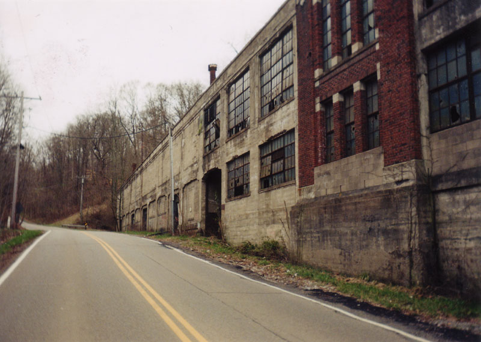

I was involved in the "Haunted House" that is pictured in the outbuilding section. The haunted house you saw was our second attempt in the Peters Cartridge building. The first was actually in the main building, near the elevator shaft, in 1992. We rented 1/4 of the bottom floor for $25.00 a month. Walls were made by draping black construction plastic over ropes and wire. We went through hell trying to get the Township of Kings Mills building and electrical inspectors to pass it. Break-ins were common since this was near the bike trail and on the first floor.
The next year, 1993, the owner asked us to move because he had another tenant willing to pay $300.00 a month for the space. We then rented the outbuilding you saw and began construction. This time we used 2" x 4" lumber and a metal door we bought from a salvage company in Hamilton for $5 each. A proper electrician wired the place for us and approval from the township inspectors was easier.
The problem with this building was water! The roof leaked; worse yet, the gun range with the dirt area for the bullets was directly above us. Water would leak year round because it would seep through the dirt and through the cracks in the floor. This was the only year we used that building. We took away anything we could and left the rest to rot. I left the Haunted House business after that. The other guy involved still runs a haunted house every year in Hamilton, Ohio.
Sneaking back out and walking around the haunted house wing, we slipped under the perimeter fence by walking in the old concrete channel which used to take the creek under the plant. The water was used to cool the shot as it dripped from the high tower that is the factory's most prominent feature.